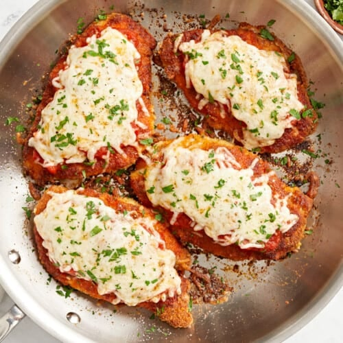

Chicken Parmesan

Description
Chicken Parmesan is a classic Italian-American dish featuring breaded chicken breasts, lightly fried to a golden brown, and then smothered in a rich tomato sauce and melted mozzarella cheese. The chicken is first coated in a mixture of breadcrumbs and Parmesan cheese, adding a savory crunch to each bite. After frying, the chicken is topped with marinara sauce and slices of mozzarella before being baked until the cheese is bubbly and slightly browned. This hearty dish is often served over a bed of spaghetti or alongside a simple green salad, making for a comforting and satisfying meal.
Ingredients
- 4 chicken breasts
- 1 cup flour
- 2 large eggs
- 1 cup breadcrumbs
- 1/2 cup grated parmesan cheese
- 1 teaspoon garlic powder
- 1 teaspoon dried oregano
- 1/2 teaspoon salt
- 1/2 teaspoon black pepper
- 1 cup marinara sauce
- 1 1/2 cups mozzarella cheese
- 1/4 cup grated parmesan cheese
- 2 tablespoons olive oil
- Fresh basil
Steps to cook
- Preheat oven to 375 and pound chicken breasts to an even thickness
- Place flour in shallow dish, in another shallow dish beat the eggs. In a third dish, combine the breadcrumps, parmesan cheese, garlic powder, oregano, salt, and pepper.
- Dredge each chicken breast in the flour, shaking off any exceess. Dip the floured chicken into the beaten eggs, ensuring its fully coated.
- Heat olive oil in a large skillet over medium heat. Fry the breadest chicken breasts for 3-4 minutes on each side, until golden brown. Transfer chicken into a baking dish.
- Spoon marinara sauce evenly over the chicken breasts, sprinkle the shredded mozzarella and the remaining parmesan cheese on top.
- Bake in the preheated oven for 20-25 minutes, or until the chicken is cooked through and the cheese is bubbly and lightly browned.
- Garnish with fresh basil, serve over cooked spaghetti.